Российский университет дружбы народов им. П. Лумумбы
Цель работы
Приобретение практических навыков установки операционной системы на
виртуальную машину, настройки минимально необходимых для дальнейшей
работы сервисов.
Выполнение лабораторной
работы
1.Создаю новую виртуальную машину.
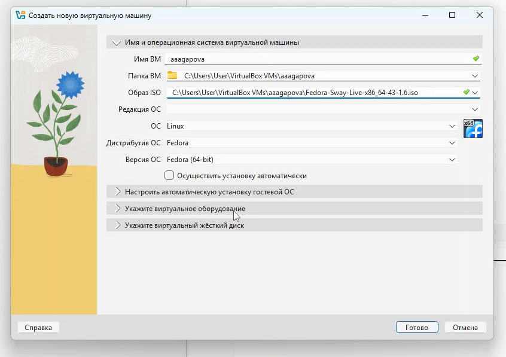
Создание виртуальной машины
Выполнение лабораторной
работы
2.Указываю объем основной памяти виртуальной машины.
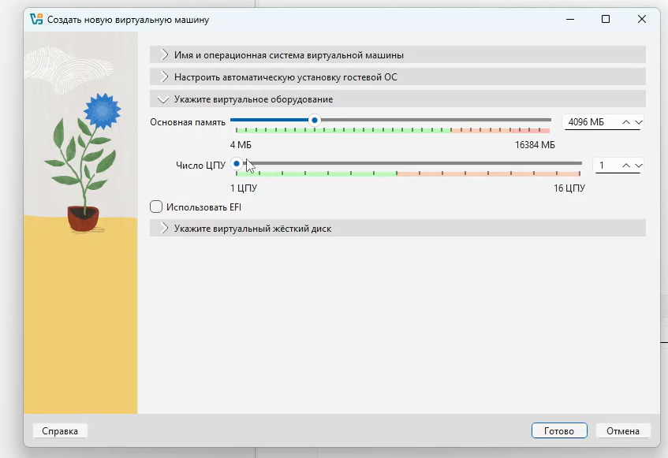
Указание объема памяти
Выполнение лабораторной
работы
3.Создаю новый виртуальный диск.
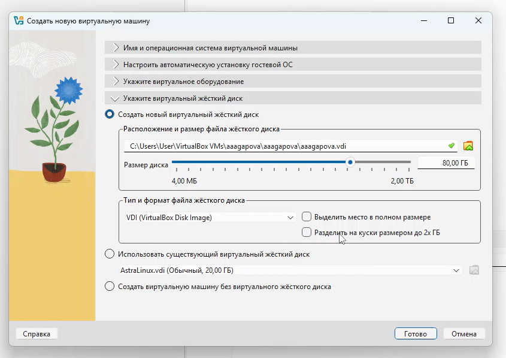
Создание виртуального диска
Выполнение лабораторной
работы
4.Выполняю команду liveinst.
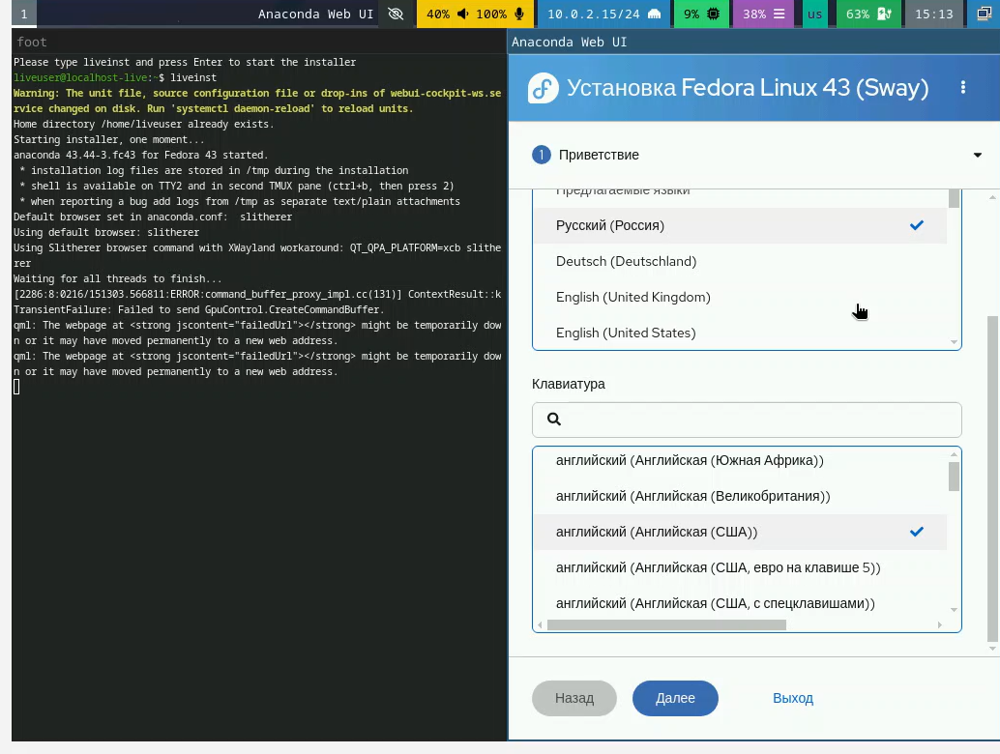
Команда liveinst
Выполнение лабораторной
работы
5.Устанавливаю язык.
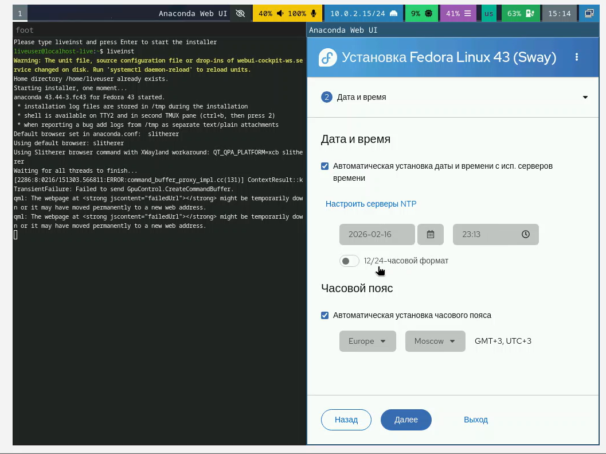
Установка языков
Выполнение лабораторной
работы
6.Устанавливаю часовой пояс и дату.
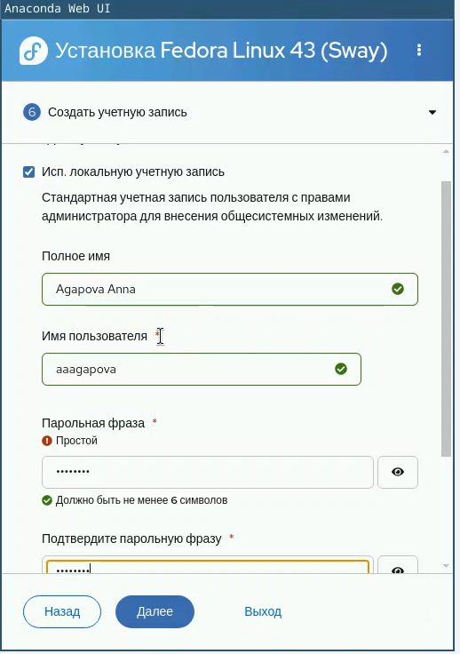
Установка часового пояса
Выполнение лабораторной
работы
7.Создаю учетную запись.
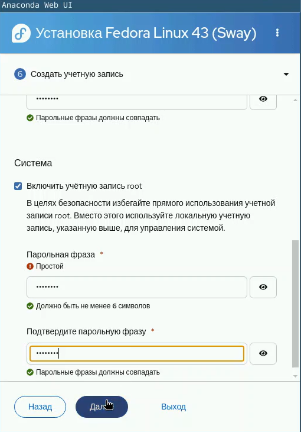
Создание учетной записи
Выполнение лабораторной
работы
8.Создаю учетной записи root.
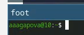
Создание учетной записи root
Выполнение лабораторной
работы
9.Создалась учетная запись.
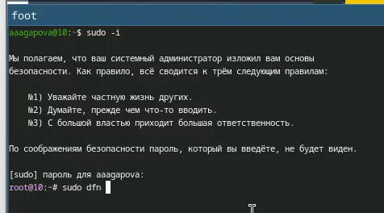
Учетная запись
Выполнение лабораторной
работы
10.Перехожу на спецпользователя.
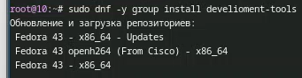
Переход на root
Выполнение лабораторной
работы
11.Устанавливаю срества разработки.
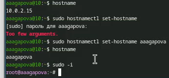
Установка средств разработки
Выполнение лабораторной
работы
12.Меняю hostname.
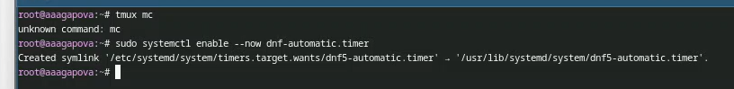
Изменение hostname
Выполнение лабораторной
работы
13.Запускаю таймер.
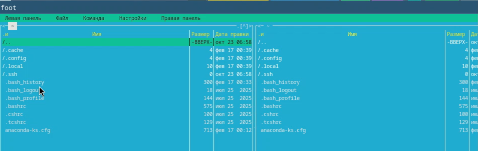
Запуск таймера
Выполнение лабораторной
работы
14.Открываю md.
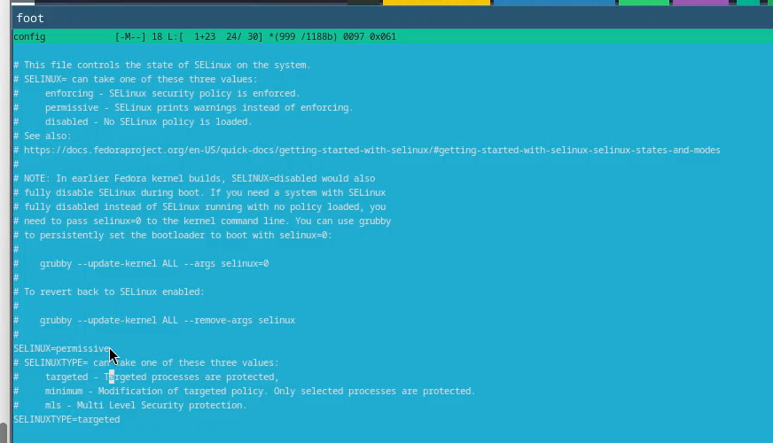
Работа с md
Выполнение лабораторной
работы
15.Меняю значение на SELINUX=permissive.
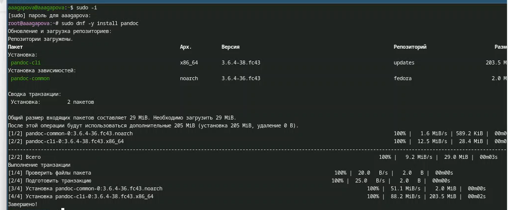
Отключение SELinux
Выполнение лабораторной
работы
16.Устанавливаю pandoc.
Работа с языком разметки
Markdown
Выводы
При выполнении данной лабораторной работы я приобрела практические
навыки установки операционной системы на виртуальную машину, а так же
сделала настройки минимально необходимых для дальнейшей работы
сервисов.
Список литературы
Dash, P. Getting Started with Oracle VM VirtualBox / P. Dash. –
Packt Publishing Ltd, 2013. – 86 сс.
Colvin, H. VirtualBox: An Ultimate Guide Book on Virtualization with
VirtualBox. VirtualBox / H. Colvin. – CreateSpace Independent Publishing
Platform, 2015. – 70 сс.
Vugt, S. van. Red Hat RHCSA/RHCE 7 cert guide : Red Hat Enterprise
Linux 7 (EX200 and EX300) : Certification Guide. Red Hat RHCSA/RHCE 7
cert guide / S. van Vugt. – Pearson IT Certification, 2016. – 1008
сс.
Робачевский, А. Операционная система UNIX / А. Робачевский, С.
Немнюгин, О. Стесик. – 2-е изд. – Санкт-Петербург : БХВ-Петербург, 2010.
– 656 сс.
Немет, Э. Unix и Linux: руководство системного администратора. Unix
и Linux / Э. Немет, Г. Снайдер, Т.Р. Хейн, Б. Уэйли. – 4-е изд. –
Вильямс, 2014. – 1312 сс.
Колисниченко, Д.Н. Самоучитель системного администратора Linux :
Системный администратор / Д.Н. Колисниченко. – Санкт-Петербург :
БХВ-Петербург, 2011. – 544 сс.
Robbins, A. Bash Pocket Reference / A. Robbins. – O’Reilly Media,
2016. – 156 сс.